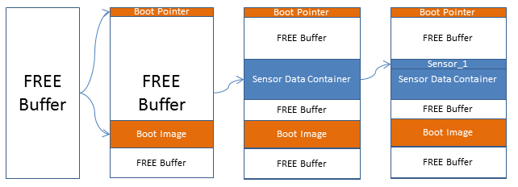

yamm
API Specification
- Easy to define various types of buffers
- Easy to allocate / deallocate buffers
- Easy to search for specific buffers
- Ensure address space consistency (i.e. allocated buffers do not overlap)
- Provide fine grained control of address space allocation (support address alignment, different size resolution)
- Provide control of memory buffers’ contents (custom buffer contents generation)
- Easy to integrate with existing verification environments
- Easy to debug memory allocation / deallocation
- Implement a fast allocation / deallocation algorithm
- Implement different allocation modes in order to allow different address space fragmentation
- Implement using a hardware verification language (SystemVerilog)
YAMM library has been presented at SNUG 2016.
YAMM Overview
A memory map is identified by a starting address, a size and a resulting end address. To occupy a specific area in a memory for some given contents, a buffer must be allocated for that specific area of a size large enough so that the contents can fit.
YAMM sets up the memory map as free and occupied buffers linked together. After a reset (if no static buffers are allocated) the memory map is a free buffer with the range of the entire memory. By allocating buffers in the memory, the initial free buffer is split and resized to make room for the new buffers.

Figure 1. Example of buffer allocation
The main features of YAMM are the following:
- Buffers can be allocated following 6 allocation modes with any granularity or address alignment or inserted by user (non-overlapping)
- Buffers can be deallocated either by address or by handle
- Buffers can be looked-up, either for a specific handle or for a queue of buffers in a specific address range
- Buffers support payload, which can be assigned by user, random generated, read and compared.
- YAMM also has statistics functions regarding fragmentation and usage